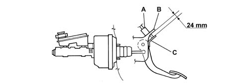

3330BA CHECK ON DISTANCE BETWEEN PEDAL ASSEMBLY MOUNTING BRACKET AND REACTION BRACKET
- Path
- Test > 33 BRAKING SYSTEM > 3330 HYDRAULIC BRAKING SYSTEM > 3330B PEDAL UNIT > 3330BA CHECK ON DISTANCE BETWEEN PEDAL ASSEMBLY MOUNTING BRACKET AND REACTION BRACKET
- Kind
- test / check procedure
- Applies to
- all engines; all production periods
- Interactive page
- https://sloeber94.github.io/elrnDB-fPnd/en/#/169000796
Applies to: all engines; all production periods
- The diagram below illustrates where the distance between the bracket (B) securing the brake pedal switch (A), located on the pedal assembly and the reaction bracket (C) for the switch push rod, located on the brake pedal should be measured.
- Measure the distance between the two brackets and check that it corresponds to the nominal distance of 24 mm.
